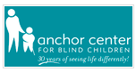
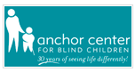

The ultimate purpose of Tactile storybooks project is developing the tactile storybook design software, in order to give capability for parents to design and print tangible pictures, by investigating scientific, technical, and cognitive factors might affect on creating tactile storybook.
More information can be found at the Tactile Picture Books Project page.

There might be lots of options for making tactile pictures that parents can choose to create tangible features. Creating a tactile pictures book can be separated into several step; (1) choose a book, (2) choose a picture, (3) load a picture into a computer, (4) select a picture element to translate, (5) select a suitable tactile model to represent the selected picture element, (6) re-arrange the elements, (7) choose an appropriate scaling factor, (8) preview a tactile picture, and (9) send a tactile picture to a 3D printer.
According to step 5, we give several options to allow parents to select a suitable tactile representation. We examine diverse possibilities to give them various options, to separate categories of pictures according to their characteristics, and to test which representation is the best fitting method for some specific elements of a tactile storybook. It leads parents to choose the best option when they create a tactile storybook for their young kids.


Tactile version of "Goodnight Moon"


Tactile version of "Polar Bear, Polar Bear, What Do You Hear?"
News
Workshop Proposal to Evaluating Tactile User Experience at ACM CHI 2014
Work In Progress Extended Abstraction was accepted by ACM TEI 2014
Winner of US Entries for Typhlo & Tactus Tactile Book Contest 2013, selected by The American Printing House for the Blind Inc.,
Funded by CU Outreach Award 2013
Work In Progress Extended Abstraction was accepted by ACM GHC 2013
Funded by Beverly Sears Graduate Student Research Grant 2013
Partners
 
